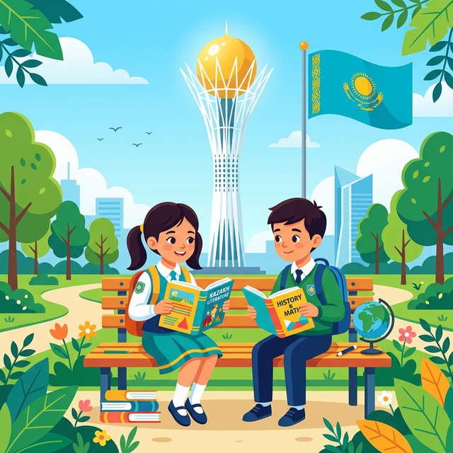

Қош келдіңіздер!
Бұл сайт 8-сыныптың орыс аудиториясына қазақ тілін тиімді әрі қызықты меңгеруге арналған. Сайтта қазақ тілінің негізгі грамматикалық тақырыптары, сөздік қорды дамытуға арналған тапсырмалар және оқушылардың тілдік дағдыларын жетілдіруге бағытталған жаттығулар берілген.
Бұл платформа арқылы оқушылар:
Сайтта тіл үйренудің негізгі төрт дағдысы қамтылған:
Әр бөлімде теориялық мәліметтер, мысалдар, интерактивті тапсырмалар және тесттер ұсынылған.
Біздің мақсатымыз – оқушылардың қазақ тіліне деген қызығушылығын арттырып, оны күнделікті өмірде қолдана білуге үйрету.

Курс барысында кездесетін негізгі терминдер мен күрделі сөздер. Аудармасын көру үшін карточканы басыңыз.
Мәтіндерді оқып, талдау жасау. 8-сынып бағдарламасындағы өзекті тақырыптар.
ХХ ғасырдың басында қазақ даласында «Алаш» қозғалысы дүниеге келді. Бұл қозғалыстың басында Әлихан Бөкейханов, Ахмет Байтұрсынұлы, Міржақып Дулатұлы сияқты ұлт зиялылары тұрды.
Олардың басты мақсаты — қазақ елінің тәуелсіздігін алу, білім мен ғылымды дамыту, ұлттық салт-дәстүрді сақтап қалу болды. Алаш қайраткерлері халықтың көзін ашу үшін «Қазақ» газетін шығарды, мектептер ашып, оқулықтар жазды.
Бүгінгі тәуелсіз Қазақстан — сол Алаш азаматтарының арманының орындалғаны. Сондықтан біз олардың еңбегін ешқашан ұмытпауымыз керек.
Күрделі сөздер: қайраткер (деятель), тәуелсіздік (независимость), зиялылар (интеллигенция), мүдде (интерес/цель).
Сұрақ: Алаш зиялыларының басты мақсаты қандай болды?
Құрмалас сөйлем құрылымы, есімше мен көсемше, төл сөз ережелері.
Сложное предложение состоит из двух и более простых предложений. Делятся на три вида: Салалас (ССП), Сабақтас (СПП), Аралас (ССК).
| Түрі (Вид) | Анықтамасы (Определение) | Жалғаулық шылаулар (Союзы) / Формасы | Мысал (Пример) |
|---|---|---|---|
| Салалас (Сложносочиненное) |
Простые предложения равноправны, независимы друг от друга. | және, мен/пен, бірақ, өйткені, немесе | Күн жылынды, және қар ери бастады. (Потеплело, и снег начал таять.) |
| Сабақтас (Сложноподчиненное) |
Одно предложение (придаточное - бағыныңқы) подчиняется другому (главному - басым). | -са/-се, -қандықтан, -ғанмен, -а/-е/-й, -ып/-іп | Күн жылынса, қар ери бастайды. (Если потеплеет, снег начнет таять.) |
| Аралас (Смешанное) |
Состоит из трех и более простых, где есть и сочинительная, и подчинительная связи. | Аралас байланыс | Жаз шығып, күн жылынды да, балалар далаға ойнауға шықты. |
Грамматика мен лексиканы тереңірек меңгеруге арналған кешенді тапсырмалар.
Берілген сөйлемдердің түрін белгілеңіз (Салалас, Сабақтас, Қарапайым (Жай сөйлем)).
1. Күн бұлттанып, жаңбыр жауды.
2. Мен сабаққа келгенде, қоңырау соғылып қойған екен.
Есімше жұрнақтарын (ған/ген, қаты/етін, мақ/мек) дұрыс таңдап жазыңыз.
Сөздерді дұрыс ретпен орналастырып, сабақтас құрмалас сөйлем құрастырыңыз.
(Перевод: Если каждый человек будет беречь природу, экология улучшится.)
Тұжырымдардың дұрыс/бұрыс екенін белгілеңіз.
1. «Өйткені, себебі, сондықтан» — бұл септеулік шылаулар.
2. Аралас құрмалас сөйлем құрамында кемінде үш жай сөйлем болады.
Курста қолданылатын тиімді және заманауи білім беру технологиялары.
Тілді тек ереже ретінде емес, қарым-қатынас құралы ретінде үйрету. Оқушылар еркін диалог құрып, өз ойларын жеткізуге машықтанады.
Қызықты интерактивті тапсырмалар мен викториналар арқылы оқушының тіл үйренуге деген мотивациясын және қызығушылығын арттыру.
Интерактивті тақтада сөздің қазақшасы мен орысша баламасын (немесе суретін) табу тақтасы ашылады.
Ойынды ашуОқушының жеке қабілеттеріне қарай қарапайымнан күрделіге көшу принципі арқылы грамматика мен сөздік қорды сапалы меңгеру.
| Студент | Оқыл. | Жаз. | Тыңд. |
|---|---|---|---|
| Ахметов А. | 85% | 90% | 75% |
| Иванов И. | 70% | 85% | 80% |
Өзекті тақырыптар төңірегінде ізденіс жұмыстарын жүргізіп, сыни тұрғыдан ойлауды және шығармашылық дербес жұмыс істеуді дамыту.
8-сынып материалдарын қамтитын 15 сұрақтан тұратын кешенді бақылау.
Уақыт шектеусіз. Тек бір ғана дұрыс жауап бар.